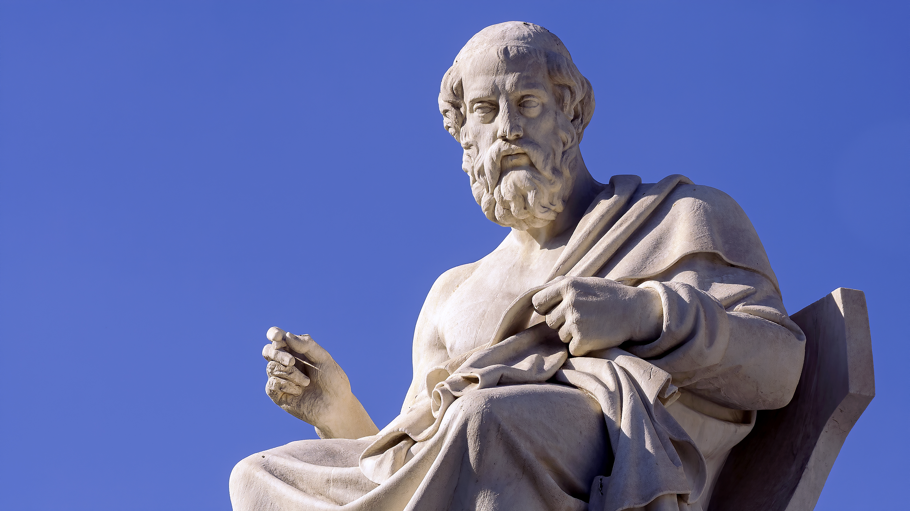
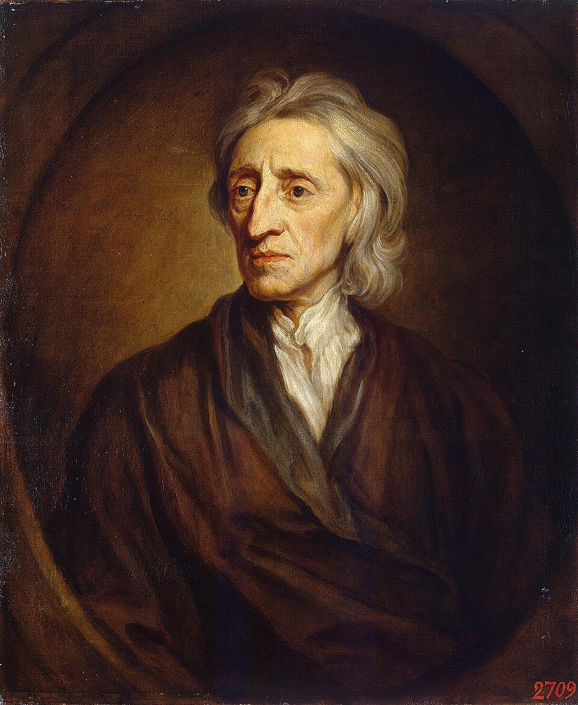
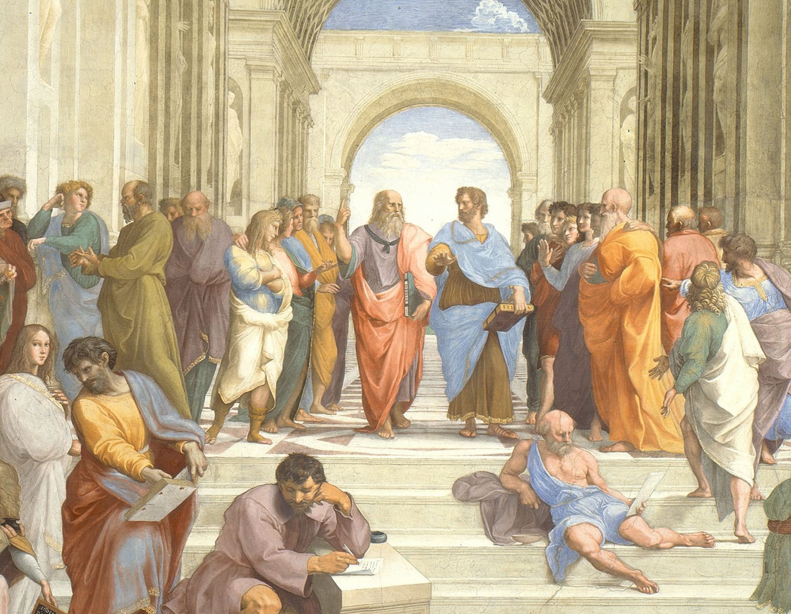

Table of Contents
1. The Brain In a Vat
2. The Skeptic's Collapse
3. Locke's Worldly Alternative
4. The Sensory Chamber
5. The World Keeps Turning
1. The Brain In a Vat

Statue of Plato at The Academy of Athens, taken by Edgar Serrano.
How can you determine whether at this moment we are sleeping, and all our thoughts are a dream; or whether we are awake, and talking to one another in the waking state? , Theaetetus
You cannot prove you are a brain in a vat, and in the grand scheme of things, it doesn’t matter. In the case that one was just a brain in a vat, and all thoughts and perceptions were synthetic, there is no way to empirically prove it. However, this does not discredit empiricism on the whole as a theory of knowledge. In fact, I would argue that empiricism is one of the most effective ways of understanding knowledge altogether.
The brain in a vat thought experiment has you consider the possibility that the world you live in is completely falsified. It was popularised by American philosopher, Hilary Putnam, as a modernised version of René Descartes’ “evil demon” scenario. The thought experiment asks you to consider the possibility that your consciousness is artificially kept alive in a vat and being run simulations by a super computer that are identical to reality. Theoretically, if the simulation is perfect, it would be impossible to prove that you are not a brain in a vat. With that in mind, any knowledge about the world comes under scrutiny due to the possibility of it being entirely fabricated. The thought experiment lays out a groundwork for skepticism.
2. The Skeptic's Collapse
Pyrrhonian Skepticism attempts to be universal, believing that we cannot know anything at all, not even that we exist. Pyrrhonian Skeptics believe that knowledge is justified true belief, suspending judgement on everything until we have clear and distinct impressions of the truth. When given the thought experiment, knowledge and truth completely falls apart for the skeptic. In their eyes, if we cannot be certain we aren’t just brains in a vat, we can’t be certain of anything at all. Skepticism’s main issues lie on a human scale. Though believing nothing would explain away all issues, by simply questioning everything, the skeptic is dooming themselves to a life of misery. It is no way to live an actual, flourishing life.
A Pyrrhonian cannot expect that his philosophy will have any constant influence on the mind: or if it had, that its influence would be beneficial to society. On the contrary, he must acknowledge, if he will acknowledge anything, that all human life must perish, were his principles universally and steadily to prevail. , An Enquiry Concerning Human Understanding
Skepticism will only ever work on paper and in theory, because humans cannot thrive by living in the unknown. If one were to question everything they ever knew, with no mental break, it would be only a matter of time before they went completely insane. Cartesian Skepticism, also introduced by Descartes, is less universal and only attempts to assert that we know nothing about the external world. The quote “I think, therefore I am,” lays the groundwork for Cartesian Skeptic beliefs. The assertion is that we can only know and understand our own mental state works as a base for rebuilding knowledge and understanding. The result is rationalism.
Portrait of Descartes, painted by Frans Hals in 1649.
I think, therefore I am. , Discourse on the Method
This statement acts as a base, with this being the first solid distinct idea that could begin to be considered indubitable. Rationalists believe that whatever can be clearly and distinctively perceived with the mind must be true. Most importantly, the realm of facts takes over knowledge as opposed to perceptions, since they cannot be certain of the external world’s existence. Rationalism believes that mathematical truths are foundational and innate. To the rationalist, every human has some sort of inherent concept and understanding of such theories from birth. They believe that it is, at least in some part, intuitive and separate from the external world. This is decidedly inaccurate, according to critics of the knowledge theory.
3. Locke's Worldly Alternative
Empiricism, formulated by John Locke as an alternative to the rationalist way of thinking, is almost entirely based on worldly perceptions. Locke defines knowledge as “the perception of the connection and agreement, or disagreement and repugnancy, of our ideas”. According to him, knowledge comes in levels of certainty; Intuitive knowledge, Demonstrative Knowledge, and Sensitive Knowledge. Intuitive knowledge is the most certain, understanding a square circle is completely impossible. Demonstrative knowledge is the middle ground, not immediately understood, but can be grasped through a chain of reasoning. Sensitive knowledge is the least certain. This is knowledge that can be grasped through our five senses. A level of certainty is definite, since the 5 senses are directly connected to the real world. There may be a level of doubt about these perceptions, but it’s able to be reasonably deduced. Where Descartes requires absolute certainty of our self and perceptions, Locke wishes to understand how humans come to understand things.
Although useless in deciding if you are simply a brain in a vat, Empiricism is decidedly crucial for existing in the real world, simulated or otherwise. Unlike other discussed theories of knowledge, Empiricism takes the perspective off of yourself and onto humanity as a whole, which is a known pitfall of Rationalism.

Portrait of John Locke, painted by Godfrey Kneller in 1697.
With the theory of Empiricism, knowledge is perception and experiences first. If you were a brain in a vat, your complete realm of knowledge would be based on falsified information. Any experience you comparted away away from your life would essentially be null and void. The only knowledge you would have is that you exist in a space, but not any solid detail surrounding whatever plane you exist in.
Descartes claimed that many of our ideas are innate; the idea of a god, 1+1=2, and the law of non-contradiction. Locke, however, claimed humans know ideas before math as a concept. He believed that the mind was a blank slate at birth and that it was constantly adding perceptions. An important thing to note is that both Descartes and Locke believed that instinct, such as infants rooting, is starkly distinct from the mind. According to Locke, a child’s thoughts begin with ideas of perception (i.e. a face, bottle, or voice). As they develop, ideas of ideas begin to form in their mind, which Locke called ideas of reflection. This is the basis of Empiricism as a theory of knowledge.
4. The Sensory Chamber
An issue that rises with Empiricism is that some ideas seem to be understood without prior experiences, such as logic and very simple math. In theory, these concepts cannot be justified by sensory experiences and perceptions alone, though in my opinion they cannot be purely innate.
Consider the idea of a child being born and kept in a sensory deprivation chamber. The chamber is constant, full of every nutrient required for growth and a temperature that never fluctuated. They couldn’t possibly have any concept of math or logic. Likely, they could never be taught, depending on how early they were freed in their developmental cycle. Of course, this hypothetical child would know nothing. Everything dealing with humanity is based on experiences and perceptions of our world. Even instincts are based on repeated experience and responses. The aforementioned rooting instinct appears in utero, around week 28 of gestation due to repeated neurological signals. A well documented delay in premature babies is a weak or completely absent rooting instinct, due to the baby never having enough time to internalize the perceptions making the need to feed an instinct.
All ideas come from sensation or reflection. Let us then suppose the mind to be, as we say, white paper, void of all characters, without any ideas: -- How comes it to be furnished? ... To this I answer, in one word, from experience. , Essay Concerning Human Understanding
5. The World Keeps Turning

An excerpt from Raphael's The School of Athens. Plato points up to the sky, representing innate ideas and rationalism, standing right next to Aristotle holding his hand flat down toward the earth, representing sensory experience and empiricism.
Empiricism cannot prove if you are a brain in a vat or not. The entire theory is based on the idea that our perceptions and experiences are grounded and infallible. However, when understood in the context of the world we actually exist in, it excels. Of course, it does not truly matter if we live in the real world or are all just brains in a warehouse being run a simulation. Our world, synthetic or otherwise, will continue to turn. No matter how fake this world may be, there are still diseases to cure and knowledge to discover. When looking from this lens, the “real world” wouldn’t be a concern when the world we do know needs so much work done.
Philosophers have hitherto only interpreted the world in various ways; the point is to change it. , Theses on Feuerbach